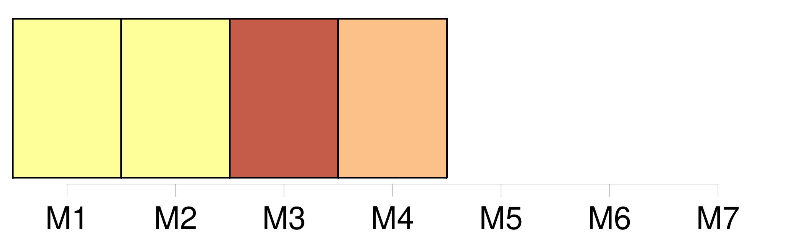
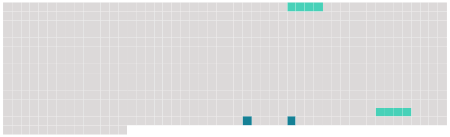

Longueur nb maillons : 4 mentions |
 |
Ainsi le zèbre de Burchell possède de 200 vingt-cinq à 201 trente raies sur 202 chacun de 203 ses flancs, le zèbre de Grévy 204 en compte environ 205 quatre-vingt et [le zèbre des montagnes] 206 quarante-trois. [12 phrases] Le « zèbre de Burchell vrai » désignerait en fait 291 une sous-espèce éteinte ( Equus quagga burchelli ) ou n'ayant jamais existé ; • • [Le zèbre des montagnes] ( Equus zebra ), de 292 l'Afrique du Sud-Ouest, tend à avoir 293 une toison lisse, 294 un ventre blanc et 295 des rayures plus rapprochées que [son] cousin des plaines. [Il] comprend 296 deux sous-espèces, en 297 danger d'298 extinction ; • • Le zèbre de Grévy ( Equus grevyi ) est le plus grand de tous les zèbres. |
 |
Il est possible de télécharger la ressource sur la page Ortolang |
Si vous avez des questions ou vous voyez des erreurs, merci d'envoyer un mail à silvia.federzoni89@gmail.com |